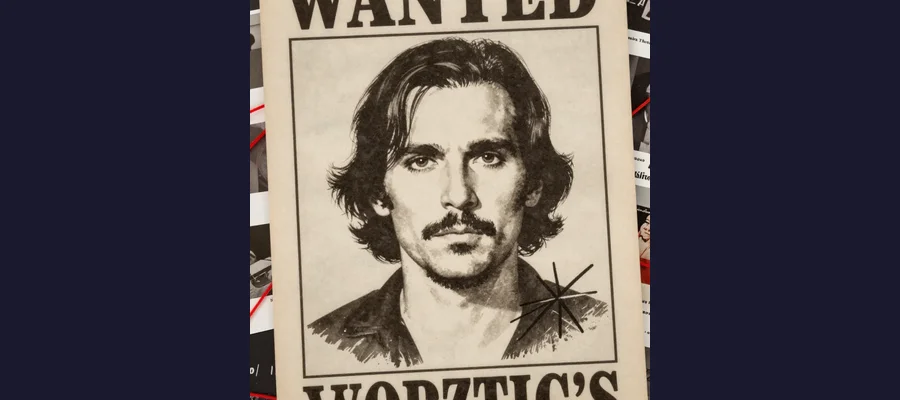
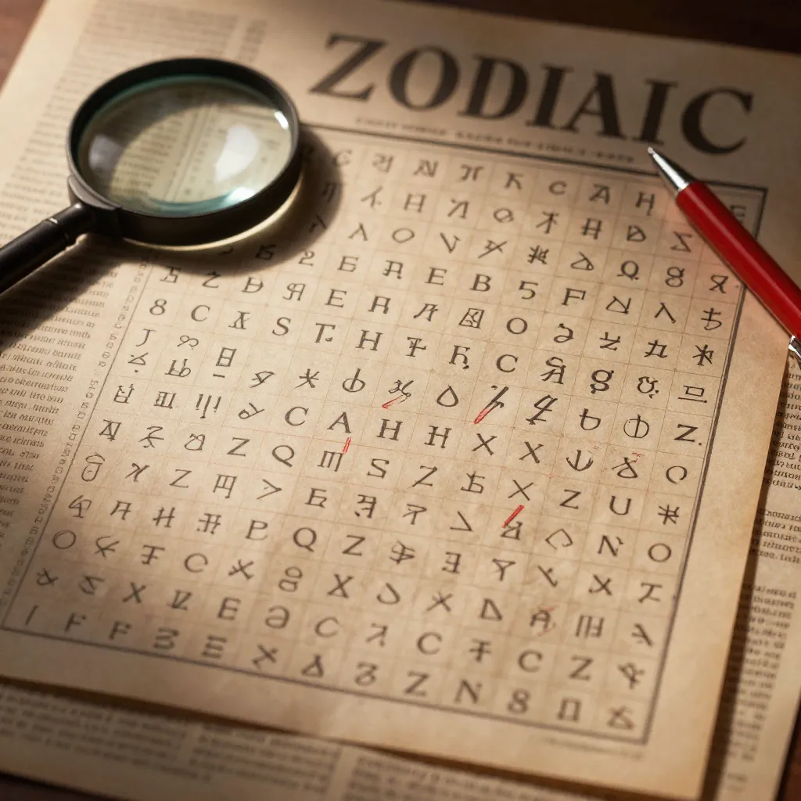

Zodiac Killer: The Unsolved Murders That Terrified California and Defied the FBI

The Zodiac Killer terrorized the San Francisco Bay Area from 1968 to 1969, murdering at least five people and taunting authorities with cryptic ciphers that took over 50 years to solve.
On December 20, 1968, two teenagers parked on a remote gravel turnout off Lake Herman Road near Benicia, California, looking for a quiet evening together. Within hours, both were dead. David Faraday, 17, and Betty Lou Jensen, 16, had been shot at close range with a semiautomatic weapon by an unknown assailant who vanished into the December darkness without a trace. The attack was brutal, seemingly random, and deeply unsettling — but it was only the beginning.
Over the next eleven months, a killer who would come to call himself the Zodiac would murder at least five people and severely injure two others across the San Francisco Bay Area. He would send taunting letters to major newspapers, encrypt his messages in ciphers that baffled the FBI and NSA for decades, and terrorize an entire region with a combination of violence and theatrical publicity-seeking that was, at the time, almost unprecedented in American criminal history.
More than half a century later, the Zodiac Killer case remains officially open and unsolved. No one has ever been charged. The prime suspect is dead. The ciphers have been cracked, but they revealed no identity. The Zodiac is one of the most infamous serial killers in American history — and we still do not know his name.
The Killings: A Campaign of Terror in Six Months
The Zodiac's confirmed attacks followed a grim, accelerating pattern over less than a year, each one bolder and more terrifying than the last.
The first confirmed attack occurred on December 20, 1968, at a secluded lovers' lane on Lake Herman Road near Benicia. David Faraday and Betty Lou Jensen, both high school students, were sitting in Faraday's station wagon when an unknown assailent approached the vehicle. Faraday was shot once in the head at close range. Jensen managed to exit the car and run approximately 30 feet before being shot five times in the back. Both were found dead at the scene. No witnesses came forward. No motive was established. The weapon, a .22 caliber semiautomatic, was never recovered.
Six months later, on July 4, 1969, the killer struck again. Darlene Ferrin, 22, and Michael Mageau, 19, were sitting in a parked car at the Blue Rock Springs Golf Course in Vallejo when a man drove up beside them, shined a flashlight into their car, and opened fire with a 9mm pistol. Ferrin was killed. Mageau, despite being shot multiple times, survived and provided the first physical description of the attacker: a heavyset white male, approximately 25 to 30 years old. Within an hour of the shooting, the Vallejo Police Department received a phone call from a man claiming responsibility for both the Blue Rock Springs and Lake Herman Road attacks.
The most brazen attack came on September 27, 1969, at Lake Berryessa in Napa County. College students Bryan Hartnell, 20, and Cecelia Shepard, 22, were picnicking on the lakeshore when a man approached wearing a bizarre costume: a black hooded outfit with a white cross-circle symbol on the chest and a clip-on sunglasses-style eyehole mask. The man claimed to be an escaped convict who needed their car to escape to Mexico. He tied them both with clothesline rope and then stabbed them repeatedly. Hartnell survived eight stab wounds. Shepard was stabbed ten times and died two days later. On the victims' car door, the killer wrote a message in black marker claiming credit for the previous attacks and including the dates.
The final confirmed killing occurred on October 11, 1969, in the affluent Presidio Heights neighborhood of San Francisco. Taxi driver Paul Stine, 29, picked up a passenger who shot him in the head at point-blank range. The killer then tore off a piece of Stine's shirt, wiped down the cab, and walked away into the night. Three teenagers witnessed the aftermath and called police, describing a white male, 25 to 30 years old. A police dispatch error sent officers looking for a Black suspect instead, and the Zodiac walked past responding officers and disappeared.
- December 20, 1968 — Lake Herman Road, Benicia: David Faraday and Betty Lou Jensen killed
- July 4, 1969 — Blue Rock Springs, Vallejo: Darlene Ferrin killed, Michael Mageau survived
- September 27, 1969 — Lake Berryessa, Napa County: Cecelia Shepard killed, Bryan Hartnell survived
- October 11, 1969 — Presidio Heights, San Francisco: Paul Stine killed
- The Zodiac claimed 37 murders in his letters; police confirmed 5 deaths and 2 injuries
- The case remains open in multiple jurisdictions: Vallejo, Napa, San Francisco, and the California Department of Justice
🔴 The Cross-Circle Symbol
The Zodiac's signature — a circle with a cross through it — became one of the most recognizable criminal insignia in history. The symbol was not original to the Zodiac; it closely resembles a gunsight or crosshair reticle, and similar symbols have been found in various astronomical and nautical contexts. The killer included the symbol in his letters, on his Lake Berryessa costume, and in his cipher messages. He also used it to sign correspondence in place of his name. The symbol's simplicity made it instantly reproducible and helped ensure maximum media coverage and public recognition — exactly what the Zodiac wanted.

The composite sketch of the Zodiac Killer, drawn from witness descriptions after the 1969 attacks. Despite thousands of tips, the killer was never identified.
The Ciphers: Letters That Haunted a Nation
What made the Zodiac Killer different from other serial murderers was not the violence itself but the way he publicized it. Beginning on August 1, 1969, the killer sent a series of letters to three Bay Area newspapers: the San Francisco Chronicle, the San Francisco Examiner, and the Vallejo Times-Herald. Each letter was written in a distinctive, childlike scrawl and included details of the crimes that had not been made public, confirming the author's involvement. Each also included one-third of a 408-character cipher (known as Z408), which the killer demanded be printed on the front pages of the papers or he would kill again.
The first cipher was solved within days by a Salinas couple, Donald and Bettye Harden, who used keyword analysis to break the substitution cipher. The decrypted message was rambling and narcissistic: "I like killing people because it is so much fun..." — but it revealed nothing about the killer's identity.
The Z340: A 51-Year Mystery
On November 8, 1969, the Zodiac sent a second cipher to the San Francisco Chronicle — this one containing 340 characters. The Z340 cipher proved vastly more complex than Z408. It resisted every attempt at decryption for 51 years, defeating professional cryptographers, amateur code-breakers, and even the FBI and NSA.
Finally, in December 2020, an international team of three code-breakers cracked Z340: David Oranchak (an American software developer), Sam Blake (a Belgian mathematician), and Jarl Van Eycke (a Belgian programmer). Their breakthrough, confirmed by the FBI, revealed that the cipher used a complex diagonal transposition in addition to homophonic substitution — essentially splitting the text into three sections read in different directions. The decoded message was a disturbing but ultimately unhelpful rant in which the Zodiac compared himself to slaves in the afterlife and claimed he was not afraid of the gas chamber. It provided no identifying information about the killer.
📜 The Letters Kept Coming
Between 1969 and 1974, the Zodiac sent at least 20 confirmed letters to newspapers, police, and even a prominent attorney. Some included further ciphers (Z13 and Z32, both still only partially solved). Others contained threats against schoolchildren, details of his weapons, and bizarre claims about being "collecting slaves for the afterlife." In 1970, he sent a greeting card containing a bloodstained piece of Paul Stine's shirt to the San Francisco Chronicle, proving he was the killer. The letters abruptly stopped in 1974. A 1978 letter was received but is widely considered a hoax. Like the cryptographers who eventually decoded the Rosetta Stone or those still struggling with the Voynich Manuscript, Z340 researchers demonstrated that patience and computational power can crack even the most stubborn codes — even when the result is deeply unsatisfying.

The infamous Z340 cipher — 340 characters of coded text that took 51 years and an international team of cryptographers to finally crack in December 2020.
The Suspects: Dead Ends and Cold Trails
Over the decades, dozens of suspects have been investigated, and several have drawn intense public and media scrutiny. None has ever been conclusively identified as the Zodiac.
The most famous suspect is Arthur Leigh Allen (1933–1992), a convicted child molester and former schoolteacher who lived in Vallejo. Allen came to police attention in 1971 when a friend reported that Allen had spoken about killing couples at lovers' lanes and had expressed interest in ciphers. Allen owned the same type of weapon used in one of the attacks, wore a Zodiac-brand watch with the cross-circle logo, and matched the general physical description. Police searched his home in 1972 and again in 1991 but found no conclusive evidence. In 2002, DNA testing of saliva on confirmed Zodiac letter envelopes did not match Allen's DNA. Allen died of a heart attack in 1992 without ever being charged. He remains the most commonly named suspect, but the case against him is entirely circumstantial.
Other notable suspects include Lawrence Kane, identified by surviving victim Michael Mageau in 1991 as the man who shot him (though Mageau's reliability was questioned); Earl Van Best Jr., proposed by his own son in a 2014 book; and Ross Sullivan, a library coworker of one of the victims who bore a resemblance to the composite sketch.
In October 2021, a group called the Case Breakers, led by former military and law enforcement investigators, identified Gary Francis Poste (1937–2018) as the Zodiac Killer. They cited photographic evidence linking Poste's forehead scars to the composite sketch and claimed that Poste's name was hidden in the ciphers. The announcement generated significant media attention but was not endorsed by any law enforcement agency. The FBI and local police departments stated that the case remains open with no new confirmed suspect.
- Arthur Leigh Allen — Prime suspect; circumstantial evidence but DNA did not match. Died 1992
- Lawrence Kane — Identified by survivor Michael Mageau in 1991; credibility questioned
- Gary Francis Poste — Named by Case Breakers group in 2021; not confirmed by law enforcement
- Ross Sullivan — Library coworker of victim; physical resemblance to sketch
- Earl Van Best Jr. — Proposed by his own son in a 2014 book
🎬 The Cultural Legacy
The Zodiac Killer has inspired a vast body of cultural works, most notably David Fincher's 2007 film Zodiac, starring Jake Gyllenhaal, Robert Downey Jr., and Mark Ruffalo. The meticulously researched film, based on Robert Graysmith's 1986 book, is considered one of the greatest true-crime films ever made. The case also influenced the Dirty Harry franchise (1971's villain "Scorpio" was based on the Zodiac), numerous documentaries, podcasts, and a thriving online community of amateur investigators who continue to analyze evidence and propose new theories. The Zodiac's blend of violence, cryptography, and media manipulation has become a template for how we understand criminal celebrity — and how we resist it.
🔍 The Cipher Without a Solution
The Zodiac Killer case is not just a murder mystery. It is a story about the limits of investigation in an era before DNA evidence, surveillance cameras, and digital forensics. The Zodiac operated in a window of time when a careful, intelligent killer could taunt an entire nation and simply vanish. His ciphers have been cracked, his letters analyzed, his suspects investigated and re-investigated. DNA has been tested. Handwriting has been compared. The internet has crowdsourced every possible lead. And still, the Zodiac remains unnamed — a dark, persistent gap in the record of American justice. Like the Black Dahlia murder or the hunt for Jack the Ripper, the Zodiac case has passed from active investigation into cultural mythology, a reminder that not every monster is caught and not every mystery is solved. The Zodiac wanted to be famous. He wanted to be feared. He got both. The least we can do is remember his victims: David Faraday, Betty Lou Jensen, Darlene Ferrin, Cecelia Shepard, and Paul Stine — five lives taken by a man whose name we may never know.
Frequently Asked Questions
Was the Zodiac Killer ever caught?
No. The Zodiac Killer has never been identified or charged with any crime. Despite one of the largest investigations in California history, involving multiple police departments, the FBI, and the U.S. Postal Service, no suspect has ever been conclusively linked to all of the confirmed attacks. The case remains officially open in Vallejo, Napa County, and San Francisco. In 2021, a civilian group called the Case Breakers identified Gary Francis Poste as the Zodiac, but law enforcement has not confirmed this identification.
How many people did the Zodiac Killer murder?
The Zodiac is confirmed to have killed five people and injured two others between December 1968 and October 1969. In his letters, he claimed to have killed 37 people, but investigators have found no evidence to support this claim. The confirmed victims are: David Faraday, Betty Lou Jensen, Darlene Ferrin, Cecelia Shepard, and Paul Stine. The two survivors are Michael Mageau and Bryan Hartnell.
What did the Zodiac ciphers say?
The first cipher (Z408), solved in 1969, contained a rambling message about killing being "fun" and collecting "slaves for the afterlife." The second and most famous cipher (Z340), solved in December 2020 after 51 years, contained a similarly disturbing message comparing the killer to slaves in the afterlife and expressing a lack of fear about the death penalty. Neither cipher revealed the killer's identity. Two additional ciphers (Z13 and Z32) remain only partially decoded.
Is the Zodiac Killer still alive?
Given that the Zodiac was described as approximately 25-40 years old in 1969, he would be 80 to 100 years old today if still alive. Most investigators and researchers consider it likely that the Zodiac is deceased. The case remains open partly because the statute of limitations does not apply to murder, and new DNA and forensic techniques could potentially identify the killer even posthumously.
📖 Recommended Reading
Want to learn more? Check out Zodiac: The Shocking True Story of the Hunt for the Nation's Most Elusive Serial Killer: Graysmith, Robert: 9780425212189 on Amazon for a deeper dive into this fascinating topic. (As an Amazon Associate, we earn from qualifying purchases.)
References & Further Reading
- Wikipedia: Zodiac Killer — Comprehensive overview of murders, ciphers, suspects, and investigation
- Britannica: Zodiac Killer — Summary of the case, confirmed victims, and key events
- FBI: Zodiac Killer — Official FBI case summary and historical overview
- All That's Interesting: The Zodiac Killer's Z340 Cipher Has Been Solved — Detailed account of the 2020 decryption
- All That's Interesting: The Zodiac Killer Case — Comprehensive investigation timeline and suspect profiles
- Wikipedia: Zodiac Killer Letters — Complete catalog of confirmed and disputed correspondence
- Wikipedia: Arthur Leigh Allen — The prime suspect and the evidence against him
Editorial note: reconstructions are continuously revised as imaging and inscription studies improve. See our Editorial Policy.